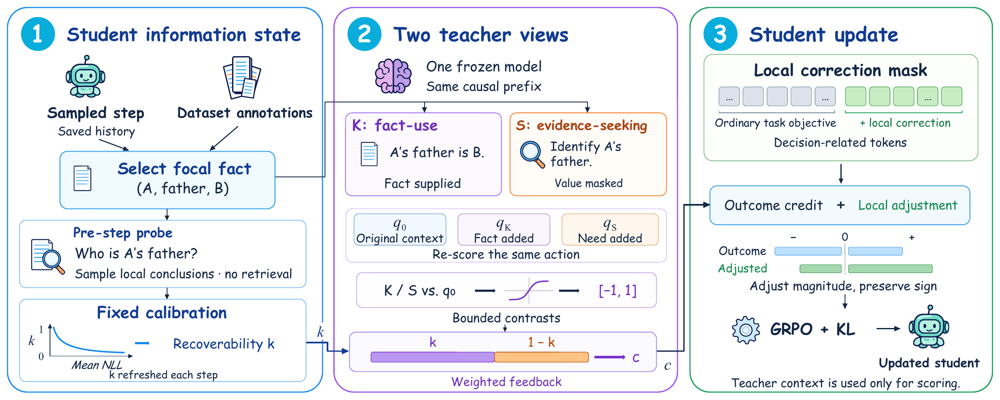
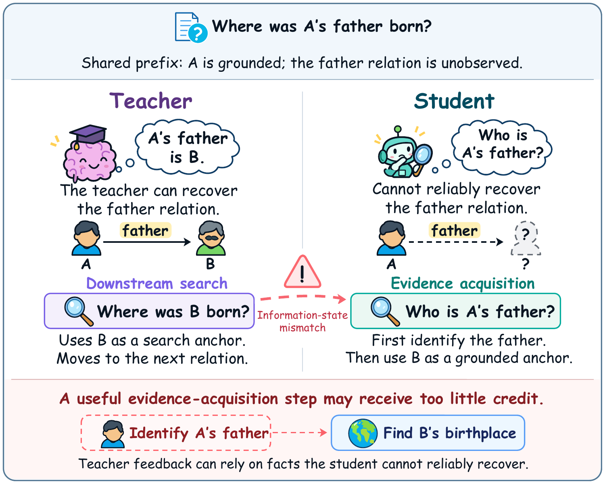
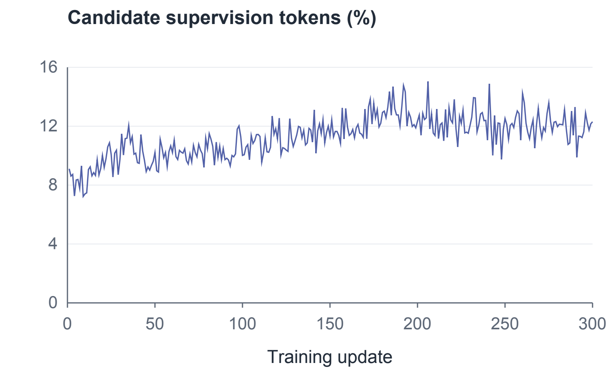
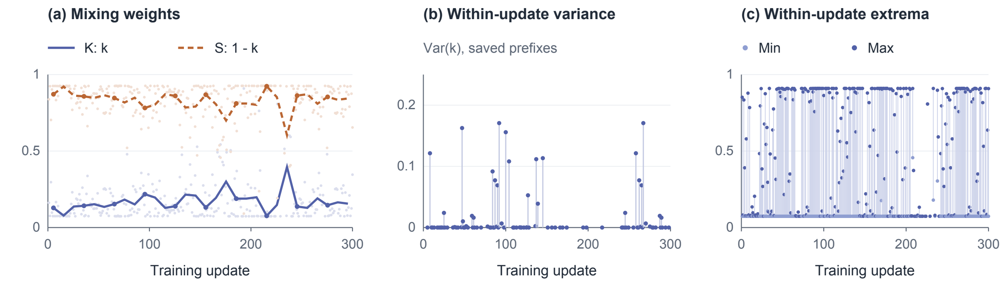
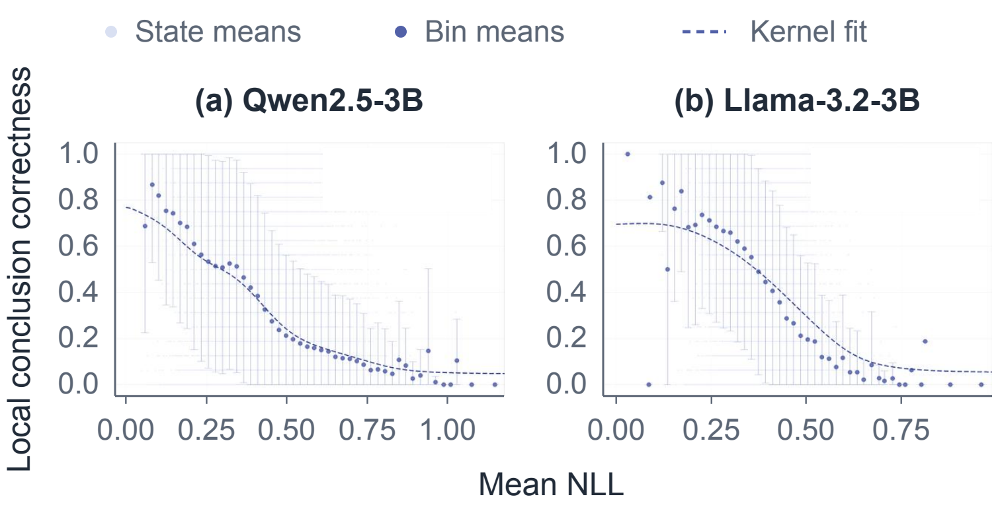
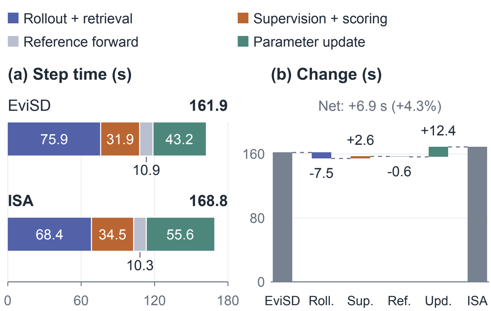

Probe the student’s knowledge
From the saved pre-action context, ask the student about a focal fact with its value hidden. Sample answers without retrieval to estimate how reliably it can recover the fact.
arXiv:2611.01987November 2026
1 Beijing Institute of Technology2 Huawei

Overview
A teacher can follow the same reasoning steps as a student and still know more. If the teacher already knows a missing fact, it may give too little credit to a search that helps the student establish it.
Information-State-Aware Distillation (ISA-Distill) estimates whether the student can recover a focal fact from its saved pre-action context. It uses that estimate to balance feedback on finding evidence and feedback on using known facts. Across seven question-answering benchmarks, the approach improves average exact match at both 3B and 7B scales.
Method

From the saved pre-action context, ask the student about a focal fact with its value hidden. Sample answers without retrieval to estimate how reliably it can recover the fact.
The fact-use view supplies the focal fact. The evidence-seeking view describes the information need while masking the answer. Both views score the action the student actually took.
Higher recoverability gives more weight to fact use. Lower recoverability favors evidence seeking. The combined signal adjusts outcome-based credit on selected action tokens during training.
Results
Evaluation covers 51,713 questions across seven QA benchmarks. ISA-Distill scores 43.9% macro-average exact match at 3B and 48.0% at 7B, the highest among the methods evaluated at each scale.
Select a dataset to compare ISA-Distill with EviSD on Qwen2.5-7B-Instruct.
| Method | EM (%) | Calls / question |
|---|---|---|
| ISA-Distill | ||
| EviSD |
Search-call change
ISA-Distill and the 11 baselines are evaluated on seven QA benchmarks. Scores are exact match (%). Avg. gives each benchmark equal weight.
Select a column heading to sort. Select a baseline to highlight it in both tables, or select it again to clear.
| Method | NQ | TriviaQA | PopQA | HotpotQA | 2WikiMQA | MuSiQue | Bamboogle | Avg. |
|---|---|---|---|---|---|---|---|---|
| ISA-Distill | 50.3 | 67.1 | 48.8 | 47.1 | 49.9 | 22.4 | 50.4 | 48.0 |
| SD-Search | 49.5 | 66.8 | 49.4 | 47.1 | 44.1 | 22.2 | 54.4 | 47.6 |
| EviSD | 48.9 | 66.5 | 48.6 | 46.6 | 48.6 | 21.6 | 49.6 | 47.2 |
| GiGPO | 46.4 | 64.7 | 46.1 | 41.6 | 43.6 | 18.9 | 68.9 | 47.2 |
| RLSD (skill) | 46.8 | 63.0 | 44.4 | 45.5 | 48.9 | 21.5 | 46.4 | 45.2 |
| SDAR | 46.3 | 63.5 | 48.2 | 43.8 | 48.4 | 19.6 | 46.4 | 45.2 |
| Skill-SD | 47.1 | 64.5 | 44.2 | 47.8 | 42.1 | 20.2 | 38.4 | 43.5 |
| PiCA | 46.0 | 64.1 | 44.2 | 42.4 | 40.1 | 19.7 | 41.9 | 42.6 |
| TIPS | 43.4 | 64.3 | 44.5 | 43.0 | 43.0 | 17.1 | 36.8 | 41.7 |
| RLSD (answer) | 46.7 | 64.2 | 45.5 | 41.8 | 42.9 | 16.6 | 32.0 | 41.4 |
| Search-R1 | 42.9 | 62.3 | 42.7 | 38.6 | 34.6 | 16.2 | 40.0 | 39.6 |
| AutoRefine | 42.0 | 60.4 | 41.3 | 39.8 | 33.3 | 17.6 | 39.2 | 39.1 |
| Method | NQ | TriviaQA | PopQA | HotpotQA | 2WikiMQA | MuSiQue | Bamboogle | Avg. |
|---|---|---|---|---|---|---|---|---|
| ISA-Distill | 47.6 | 63.3 | 47.7 | 42.0 | 45.9 | 20.5 | 40.0 | 43.9 |
| SD-Search | 46.9 | 62.4 | 46.5 | 42.4 | 41.9 | 18.4 | 40.4 | 42.7 |
| EviSD | 46.6 | 63.1 | 48.7 | 42.4 | 44.9 | 17.5 | 35.2 | 42.6 |
| RLSD (answer) | 44.8 | 61.8 | 47.5 | 40.1 | 41.3 | 14.6 | 28.8 | 39.8 |
| AutoRefine | 43.6 | 59.7 | 44.7 | 40.4 | 38.0 | 16.9 | 33.6 | 39.6 |
| PiCA | 42.6 | 61.2 | 41.7 | 40.0 | 40.8 | 16.0 | 34.7 | 39.6 |
| RLSD (skill) | 41.5 | 58.6 | 42.3 | 40.4 | 40.2 | 16.8 | 34.4 | 39.2 |
| Skill-SD | 44.4 | 60.4 | 44.0 | 39.5 | 40.4 | 15.4 | 30.4 | 39.2 |
| SDAR | 44.8 | 58.1 | 44.3 | 38.6 | 36.2 | 15.7 | 32.8 | 38.6 |
| GiGPO | 42.0 | 59.5 | 42.4 | 36.9 | 37.0 | 12.6 | 28.8 | 37.0 |
| Search-R1 | 39.7 | 56.5 | 39.1 | 33.1 | 31.0 | 12.4 | 23.2 | 33.6 |
| TIPS | 43.5 | 58.8 | 42.8 | 31.4 | 29.3 | 8.7 | 20.8 | 33.6 |
The 7B student makes fewer search calls on all three single-hop datasets and more on all four multi-hop datasets. Its exact-match accuracy improves on all seven against EviSD.
| Dataset or group | EviSD | ISA-Distill | Change |
|---|---|---|---|
| Overall | 2.28 | 2.22 | −2.45% |
| Single-hop average | 2.14 | 1.99 | −7.21% |
| NQ | 2.14 | 1.87 | −12.45% |
| PopQA | 2.20 | 2.08 | −5.41% |
| TriviaQA | 2.08 | 1.92 | −7.88% |
| Multi-hop average | 2.46 | 2.53 | +2.94% |
| MuSiQue | 2.71 | 2.78 | +2.77% |
| HotpotQA | 2.32 | 2.40 | +3.58% |
| 2WikiMQA | 2.49 | 2.56 | +2.61% |
| Bamboogle | 2.30 | 2.40 | +4.53% |
On Qwen2.5-3B-Instruct, ISA-Distill reaches 43.9% macro-average exact match with 2.22 searches per question. The ablation compares this adaptive feedback with a single teacher view and with fixed weights of 20% fact use and 80% evidence seeking.
| Feedback setting | EM (%) | Calls |
|---|---|---|
| Base | 34.1 | 1.53 |
| Fact-use only | 41.2 | 1.92 |
| Evidence-seeking only | 43.3 | 2.97 |
| Fixed mixture (20% / 80%) | 41.3 | 2.13 |
| ISA-Distill | 43.9 | 2.22 |
In 698 state–search pairs from 228 HotpotQA training questions, keeping the retrieved support improved the frozen 3B student’s answer accuracy on 396 pairs. Giving the teacher the focal fact lowered its score for the original search in 251 of those 396 pairs.
| Condition | Pairs | Share | 95% CI |
|---|---|---|---|
| Add the focal fact | 251 / 396 | 63.4% | 56.9–69.9% |
| Length-matched control | 258 / 396 | 65.2% | 58.8–71.3% |
| Drop over 0.01 nats/token in all four contrasts | 171 / 396 | 43.2% | 37.2–49.2% |
| Positive utility in both halves | 183 / 293 | 62.5% | 54.7–70.0% |
Across the same seven benchmarks, ISA-Distill improves average exact match over EviSD by 1.3 points on Llama-3B, matching the gain on Qwen2.5-3B-Instruct.
| Backbone | EviSD | ISA-Distill | Gain (pts) |
|---|---|---|---|
| Qwen2.5-3B | 42.6 | 43.9 | +1.3 |
| Qwen2.5-7B | 47.2 | 48.0 | +0.8 |
| Llama-3B | 43.5 | 44.8 | +1.3 |




Case study · 2WikiMultiHopQA eval_43819
Select a search or answer to inspect each model’s trajectory.
Figure 10 in the paper Appendix B.5 · Case recordQwen2.5-7B · 2 searches
Qwen2.5-7B · 1 search
Citation
@misc{sun2026sametrajectory,
title = {Same Trajectory, Different Knowledge: Information-State-Aware On-Policy Distillation for Search Agents},
author = {Minhao Sun and Xian-Ling Mao and Eric Tao and Zi-Ao Ma and Zhijing Wu},
year = {2026},
eprint = {2611.01987},
archivePrefix = {arXiv},
primaryClass = {cs.IR},
doi = {10.48550/arXiv.2611.01987},
url = {https://arxiv.org/abs/2611.01987}
}